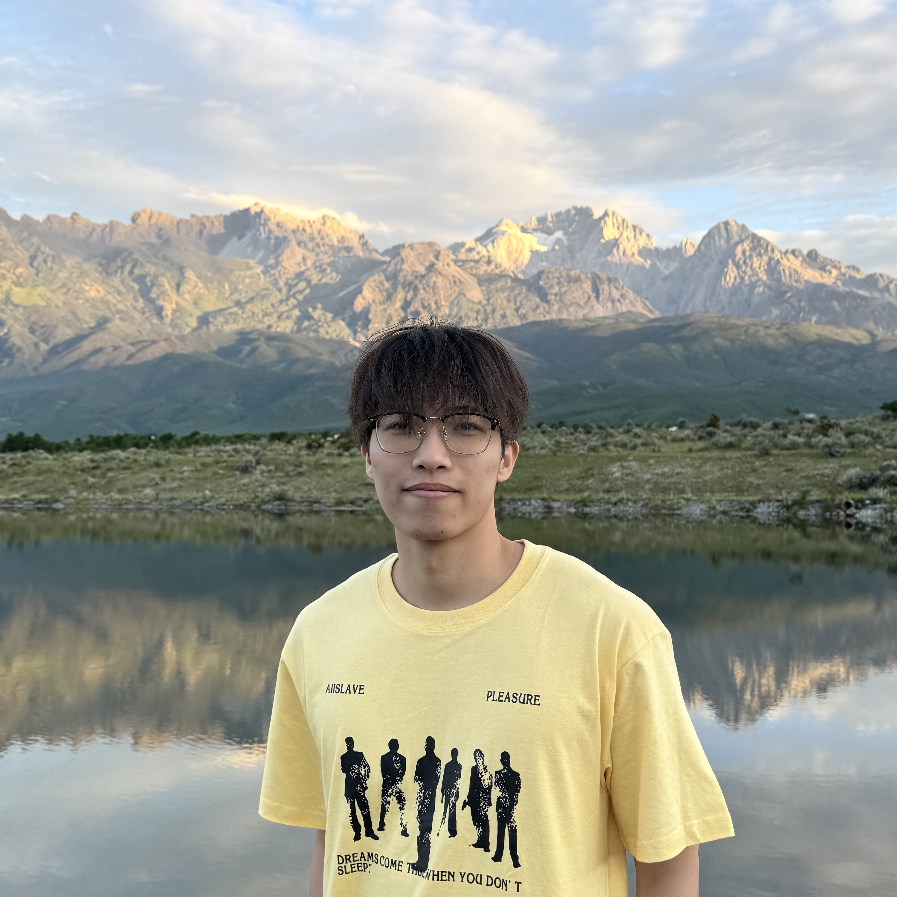

Agentic AI
Modular systems that coordinate specialized language agents.
Computer Science · NLP · Agentic AI
I build language agents that reason, retrieve, and collaborate more efficiently.

Upload a file named profile.jpg to add your portrait.
01 / ABOUT
I am a Computer Science undergraduate at Zhejiang Sci-Tech University, graduating in June 2026. My research spans modular multi-agent LLM systems, reasoning-driven retrieval, natural language reasoning, reinforcement learning for language agents, and evaluation under uncertain rewards.
Across my work, I ask a practical question: how can we allocate knowledge, reasoning, and compute to the right stage of an AI workflow?
RESEARCH INTERESTS
Modular systems that coordinate specialized language agents.
Planning information needs before evidence acquisition.
Routing models and compute according to workflow roles.
02 / SELECTED PUBLICATIONS
IJCNLP-AACL 2025 · Oral
IEEE VISxGenAI 2025
ACL Findings 2026
Preprint · AAAI 2027 under review
03 / EXPERIENCE
May 2026 — Present
Supervised by Prof. Jiaming Cui
Developing EvoCap, a trace-driven routing framework for multi-agent LLM workflows. The work matches all-strong performance with roughly 10% strong-model calls and reduces test-time API cost by 73.9%.
Apr 2025 — May 2026
Supervised by Prof. Li Zhang
Built a modular PDDL generation pipeline combining documentation retrieval, code generation, and error refinement, improving syntactic correctness from 0% to 90%+ and semantic correctness from 0% to 80%+.
May 2025 — May 2026
Supervised by Prof. Dongyeop Kang
Worked on multi-agent visualization and verification. Proposed selective test-time scaling to improve insight quality while reducing variance by 25%.
Aug 2024 — Jun 2026
Supervised by Prof. Zhiyi Luo
Studied reasoning-driven retrieval and multi-span question answering, including TROVE, TOAST, CLEAN, and SIGMA-CoT across English and Chinese benchmarks.
LET'S CONNECT